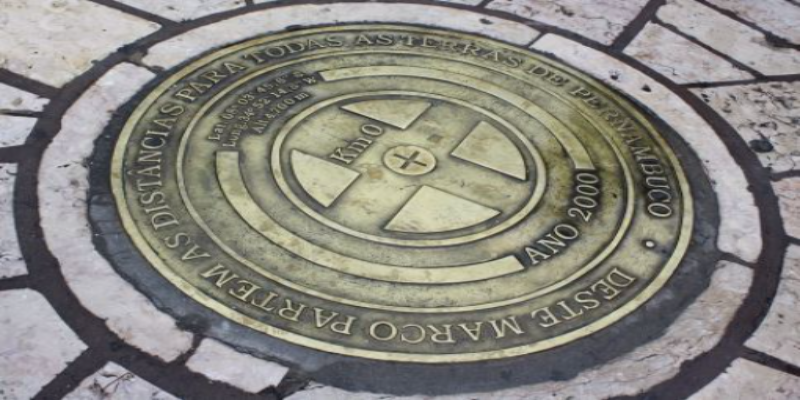

Venha conhecer um dos principais pontos turísticos de Recife!
O Marco Zero de Recife A Praça do Marco Zero, também conhecida como Praça do Rio Branco, localizada no coração desse bairro, é onde podem ser vistos alguns reflexos de todos esses momentos, de modo que no entorno estão localizados monumentos históricos importantes. Após ter permanecido submerso até meados do século 18, por ser a rota de entrada pelo mar, o Marco Zero de Recife foi oficialmente inaugurado em 31 de janeiro de 1938. Nos anos 1990, o entorno também passou por reformas que buscaram revitalizar a área portuária, o que implicou a retirada de parte da cobertura vegetal que ali existia. Com isso, os antigos casarões deram lugar a novos estabelecimentos e avenidas.
A mudança do piso também ocorreu, e hoje o Marco Zero está localizado no interior de uma rosa dos ventos gigante, com 10 metros de raio, obra de Cícero Dias, transformando o local em um símbolo do ponto inicial das estradas do Estado de Pernambuco e conferindo um novo valor à região. Ao redor estão dispostos edifícios de grande valor histórico, como a Bolsa de Valores e a Associação Comercial do Recife, o que valoriza o bairro e a torna a praça especialmente convidativa para turistas e moradores.

A obra é formada por pedras de quartzo e granito, abrigando uma placa redonda que anuncia o início para as estradas. Vale conhecer a história, admirar a paisagem e notar a força da Cultura local. O Marco Zero é, literalmente, palco principal da maior festa popular do mundo: o Carnaval.